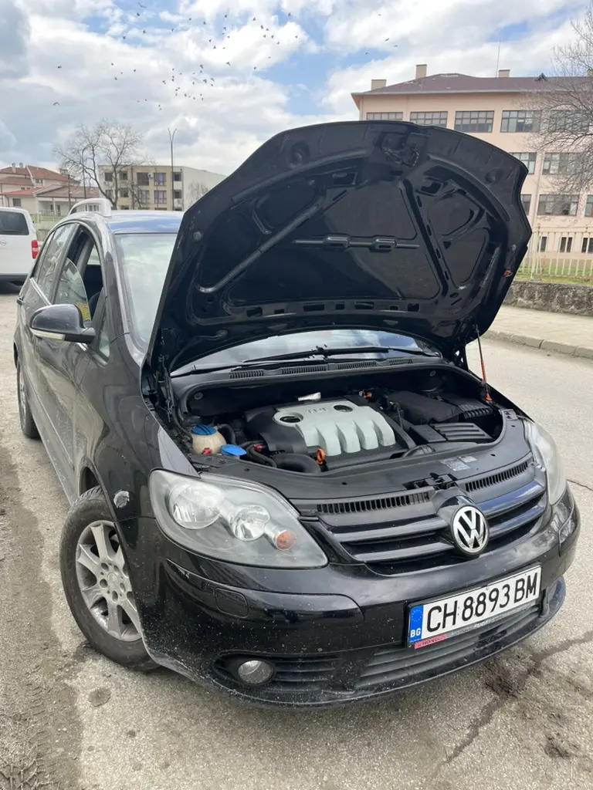
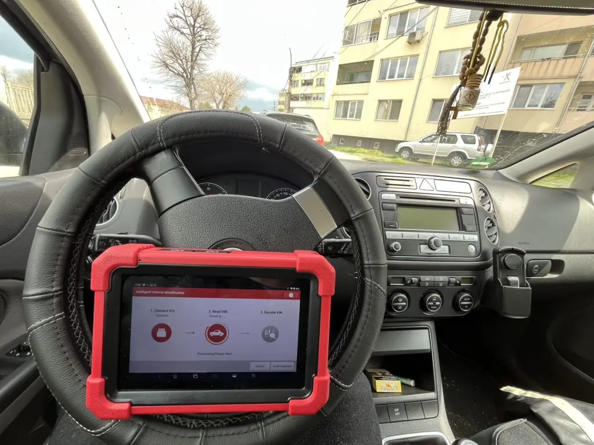

Чип Тунинг за VAG (VW, Audi, Skoda, Seat)
Ние сме специалисти в софтуерната оптимизация на автомобили от VAG групата. Използваме дилърско оборудване и предлагаме индивидуални решения за всеки модел.


🚗 VW Golf Plus 1.9 TDI (105hp)
✅ Stage 1 Remap | ✅ EGR Off | 🍿 Popcorn
Прочети всичко...
Оптимизирахме софтуера на VW Golf Plus 1.9 TDI (105hp), оборудван с Bosch EDC16U34. Целта на проекта беше да подобрим работата на двигателя и да премахнем фабричните ограничения, без да компрометираме ресурса на мотора.
🛠 Извършени услуги:
- 🚀 Stage 1 Ремап: Увеличение на мощността и въртящия момент.
- ✅ Софтуерно премахване на ЕГР: Трайно решение срещу зацапване.
- 🍿 Popcorn Limiter: Ограничител на 4500rpm.
🚀 Резултатът:
Задълбочена диагностика с Launch X431. Колата е в перфектно състояние и готова за път.
💻 ECU: Bosch EDC16U34 | 📍 Бургас / Карнобат


🚗 VW Touareg 3.0 TDI 2013г.
✅ Remap Stage 1 | ✅ DPF / EGR OFF
Прочети всичко...
✅ Механично премахване на ДПФ
🚀 Резултат:
Значително повишена мощност и въртящ момент, подобрена динамика. 💻 ECU: EDC17CP44
⭐ Отзив
🚗 Audi A6 3.0 TDI (224hp)
🛠 Stage 1 + P0234 Fix
Прочети всичко...
🔍 Диагностика: Коригирано пренадуване на турбината след лош тунинг.
🛠 Екстри: EGR Off, Swirl Flaps Off, Popcorn Limiter.
💻 ECU: Bosch EDC16CP34

🚗 Skoda Octavia 2 1.9 TDI
🔑 Immo Off
Прочети всичко...
💻 Метод: Работа в Bench Mode (ECU EDC16U34).
Трайно софтуерно решение вместо скъп ремонт на таблото.

🚗 VW Polo 1.6TDI 2010г.
🚀 Stage 1 Remap | ✅ EGR/DPF Off

🚗 VW Passat B6 2.0TDI
🚀 140кс ↗️ 175кс | 320нм ↗️ 390нм

🚗 Audi A3 8P 2.0 TDI (BKD)
🚀 140кс ↗️ 175кс | 320нм ↗️ 395нм

🚗 VW Bora 1.9 TDI (AJM)
🍿 116кс ↗️ 145кс | Popcorn & Launch

💻 Лаборатория & Електроника
✅ Bench Mode Specialists
EDC17, MED17, MD1, TCU Ремап.
Защо да изберете нас за вашия VW/Audi?
- ✅ Работа с дилърски софтуер ODIS и VCDS.
- ✅ Ремап на DSG / S-Tronic скоростни кутии.
- ✅ Софтуерни решения за EDC17, MED17 и MD1/MG1 компютри.
- ✅ Изключване на DPF, EGR, AdBlue и Вихрови клапи.